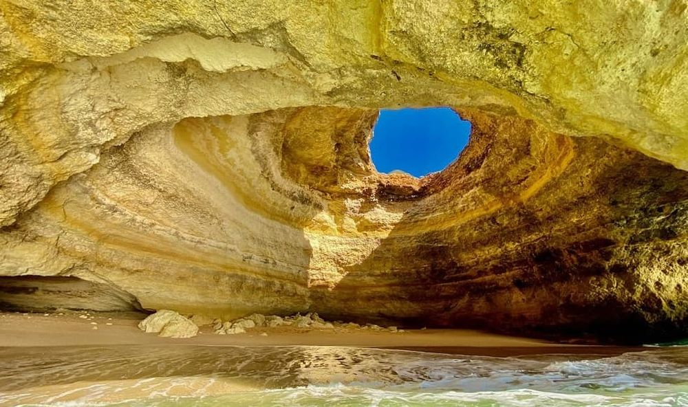

Descoperă Algarve - Paradisul litoral al Portugaliei
Algarve este o regiune costieră spectaculoasă din Portugalia, cunoscută pentru plajele sale frumoase și peisajele pitorești:
-

Plaje idilice
Algarve găzduiește unele dintre cele mai frumoase plaje din Europa, cu nisip fin și apă cristalină.
-

Stânci impresionante
Peisajul este dominat de stânci spectaculoase și peisaje de coastă cu peisaje dramatic.
-

Orașe pitorești
Orașe ca Albufeira, Lagos și Faro oferă o combinație de istorie, cultură și relaxare pe plajă.
-

Destinație de golf
Algarve este renumită pentru terenurile sale de golf de înaltă calitate, care atrag iubitorii de sport.
-

Bucătăria delicioasă
Regiunea este cunoscută pentru fructele de mare proaspete și mâncărurile tradiționale portugheze.
Concluzii
Algarve oferă o experiență de vacanță uimitoare, cu peisaje spectaculoase, plaje de nisip și activități diverse.